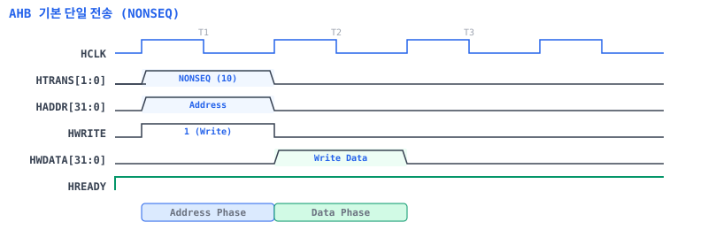
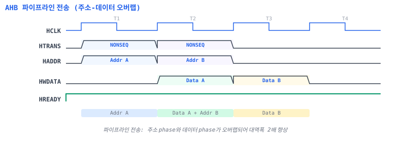
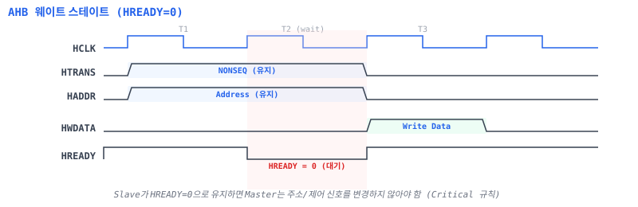
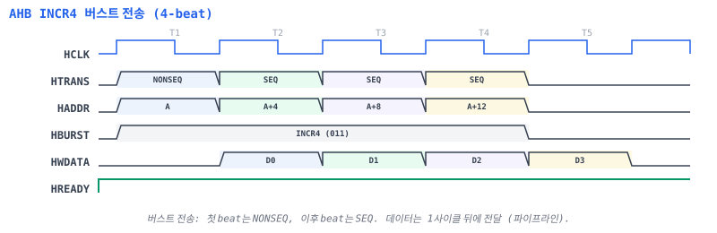
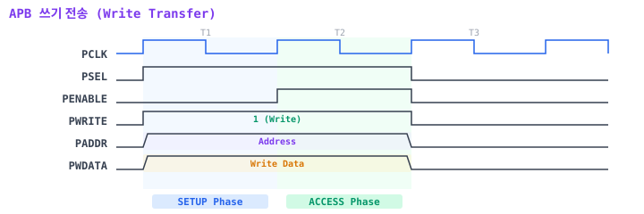
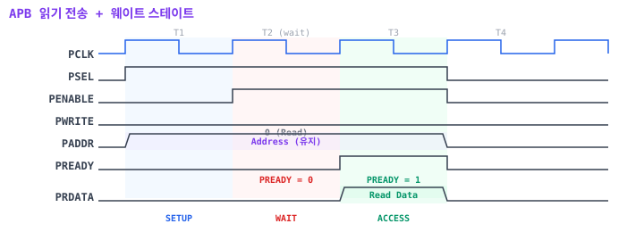
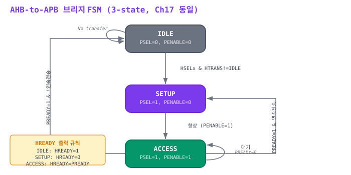

C.1 AHB-Lite 신호 목록
AHB-Lite는 단일 마스터(Single Master) 버전의 AMBA AHB 프로토콜이다. 본 교재(Chapter 16)에서는 캐시 미스 핸들러를 AHB Requester(Master)로, SRAM 컨트롤러를 AHB Completer(Slave)로 구현한다.
| 신호명 | 방향 | 비트 폭 | 설명 | Ch16 |
|---|---|---|---|---|
HCLK |
Global | 1 | 버스 클록. 모든 신호는 HCLK 상승 에지에 동기. | 사용 |
HRESETn |
Global | 1 | 액티브 로우 리셋. | 사용 |
HADDR |
Master | 32 | 전송 주소. Address Phase에서 유효. | 사용 |
HTRANS |
Master | 2 | 전송 타입: IDLE(00), BUSY(01), NONSEQ(10), SEQ(11) | 사용 |
HWRITE |
Master | 1 | 전송 방향: 1=Write, 0=Read | 사용 |
HSIZE |
Master | 3 | 전송 크기: 000=Byte, 001=Halfword, 010=Word | 사용 |
HBURST |
Master | 3 | 버스트 타입: SINGLE(000), INCR4(011), INCR8(101) 등 | 사용 |
HPROT |
Master | 4 | 보호 제어: [0]=Opcode/Data, [1]=Priv, [2]=Buffer, [3]=Cache | 미사용 |
HWDATA |
Master | 32 | 쓰기 데이터. Data Phase에서 유효. | 사용 |
HSELx |
Decoder | 1 | Slave 선택 신호 (디코더가 생성). | 사용 |
HRDATA |
Slave | 32 | 읽기 데이터. Data Phase에서 유효. | 사용 |
HREADY |
Slave | 1 | 전송 완료: 1=완료, 0=대기(웨이트 스테이트) | 사용 |
HREADYOUT |
Slave | 1 | 개별 Slave의 준비 신호. MUX로 HREADY 생성. | 사용 |
HRESP |
Slave | 1 | 응답: 0=OKAY, 1=ERROR (AHB-Lite에서 1비트) | 사용 |
HMASTLOCK |
Master | 1 | 잠긴 전송 표시. 원자 연산용. | 미사용 |
HTRANS 인코딩
| 값 | 이름 | 설명 |
|---|---|---|
2'b00 | IDLE | 전송 없음. Slave는 무시. |
2'b01 | BUSY | 버스트 중 Master가 삽입하는 유휴 사이클. Slave는 무시. |
2'b10 | NONSEQ | 단일 전송 또는 버스트의 첫 beat. |
2'b11 | SEQ | 버스트의 연속 beat. 주소 자동 증가. |
HBURST 인코딩
| 값 | 이름 | Beat 수 | 주소 패턴 |
|---|---|---|---|
3'b000 | SINGLE | 1 | 단일 전송 |
3'b001 | INCR | 가변 | 증가 (길이 미정) |
3'b010 | WRAP4 | 4 | 4-beat 래핑 |
3'b011 | INCR4 | 4 | 4-beat 증가 |
3'b100 | WRAP8 | 8 | 8-beat 래핑 |
3'b101 | INCR8 | 8 | 8-beat 증가 |
3'b110 | WRAP16 | 16 | 16-beat 래핑 |
3'b111 | INCR16 | 16 | 16-beat 증가 |
HSIZE 인코딩
| 값 | 크기 | 비트 |
|---|---|---|
3'b000 | Byte | 8비트 |
3'b001 | Halfword | 16비트 |
3'b010 | Word | 32비트 (본 교재 기본) |
3'b011 | Doubleword | 64비트 |
C.2 AHB 타이밍 다이어그램
AHB 전송은 Address Phase와 Data Phase의 2단계로 구성된다. 파이프라인 전송에서는 두 phase가 오버랩되어 대역폭이 향상된다.
C.2.1 기본 단일 전송

C.2.2 파이프라인 전송

C.2.3 웨이트 스테이트

C.2.4 버스트 전송 (INCR4)

C.3 APB 신호 목록
APB(Advanced Peripheral Bus)는 저속 주변 장치 연결에 사용하는 간단한 프로토콜이다. AHB-to-APB 브리지를 통해 UART, GPIO, 타이머 등을 연결한다(Chapter 17).
| 신호명 | 방향 | 비트 폭 | 설명 | Ch17 |
|---|---|---|---|---|
PCLK |
Global | 1 | APB 클록. 보통 HCLK과 동일. | 사용 |
PRESETn |
Global | 1 | 액티브 로우 리셋. | 사용 |
PADDR |
Requester | 32 | APB 주소. | 사용 |
PSEL |
Requester | 1 | Completer 선택. SETUP/ACCESS phase에서 1. | 사용 |
PENABLE |
Requester | 1 | 전송 인에이블. ACCESS phase에서 1. | 사용 |
PWRITE |
Requester | 1 | 전송 방향: 1=Write, 0=Read. | 사용 |
PWDATA |
Requester | 32 | 쓰기 데이터. | 사용 |
PSTRB |
Requester | 4 | 바이트 스트로브 (APB4). 바이트별 쓰기 인에이블. | 미사용 |
PRDATA |
Completer | 32 | 읽기 데이터. ACCESS phase에서 유효. | 사용 |
PREADY |
Completer | 1 | 전송 완료: 1=완료, 0=대기. | 사용 |
PSLVERR |
Completer | 1 | 에러 응답: 1=에러. ACCESS phase에서 유효. | 사용 |
C.4 APB 타이밍 다이어그램
APB 전송은 SETUP Phase (PSEL=1, PENABLE=0)와 ACCESS Phase (PSEL=1, PENABLE=1)로 구성된다.
C.4.1 쓰기 전송

C.4.2 읽기 전송 + 웨이트 스테이트

C.5 AHB-to-APB 브리지 상태 전이도
AHB-to-APB 브리지는 고속 AHB 프로토콜을 저속 APB 프로토콜로 변환한다. 브리지는 AHB 측에서는 Completer(Slave)로, APB 측에서는 Requester(Master)로 동작한다.

FSM 상태별 출력 신호
| 상태 | HREADY | PSEL | PENABLE | 설명 |
|---|---|---|---|---|
IDLE |
1 | 0 | 0 | 유휴 상태. AHB 전송 대기. 주소/제어 래치 포함. |
SETUP |
0 | 1 | 0 | APB SETUP phase. AHB Master에 대기 요청. |
ACCESS |
PREADY | 1 | 1 | APB ACCESS phase. PREADY=1이면 완료. |
브리지 FSM 핵심 코드 조각
// AHB-to-APB 브리지 FSM (핵심 로직) — Ch17과 동일한 3-state 구조
typedef enum logic [1:0] {
ST_IDLE, ST_SETUP, ST_ACCESS
} bridge_state_t;
bridge_state_t state, next_state;
always_comb begin
next_state = state;
case (state)
ST_IDLE:
if (hsel && htrans != 2'b00)
next_state = ST_SETUP; // 주소/제어 래치 후 바로 SETUP
ST_SETUP:
next_state = ST_ACCESS;
ST_ACCESS:
if (pready)
next_state = (hsel && htrans != 2'b00) ?
ST_SETUP : ST_IDLE;
endcase
end
// HREADY 출력: SETUP에서는 0, ACCESS에서는 PREADY 전달
assign hready_out = (state == ST_SETUP) ? 1'b0 :
(state == ST_ACCESS) ? pready : 1'b1;